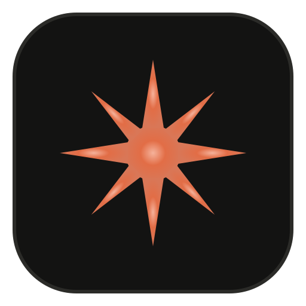

Project UAI CoworkA LITTLE MORE ROOM TO CREATEYour game.
A local connection, on your computer.
Your game.
Your ideas.
One workspace.
Bring your Roblox conversation into the browser. More room for code, live responses, and the things you want to build.